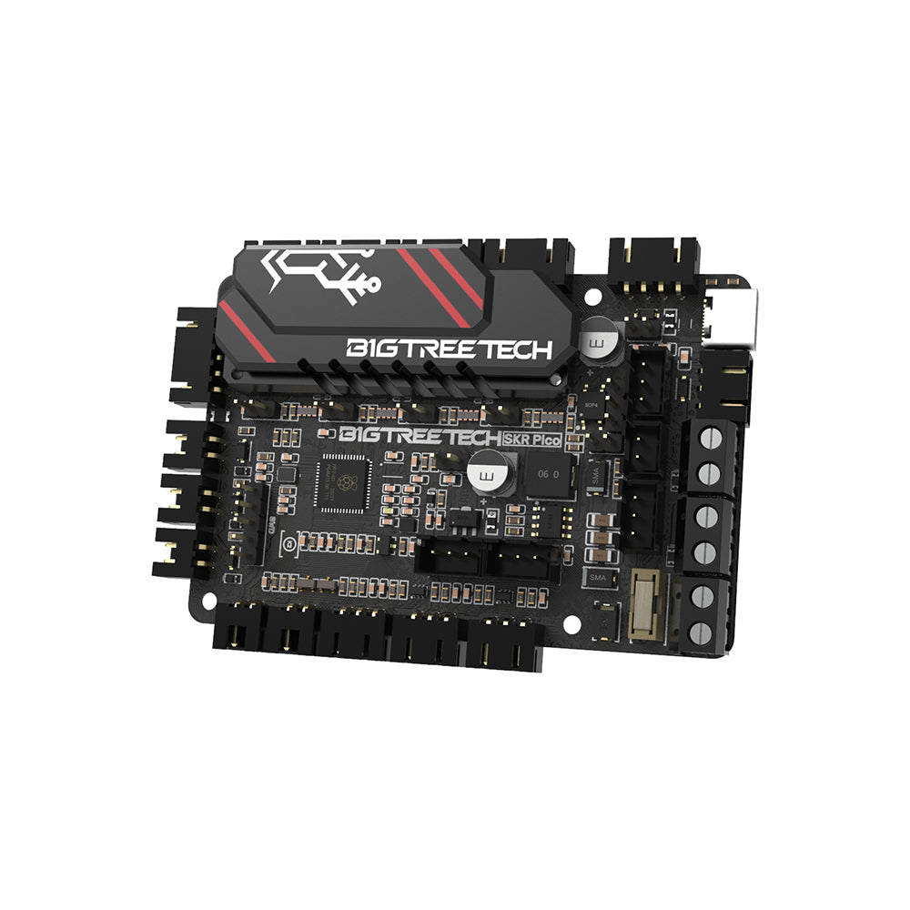
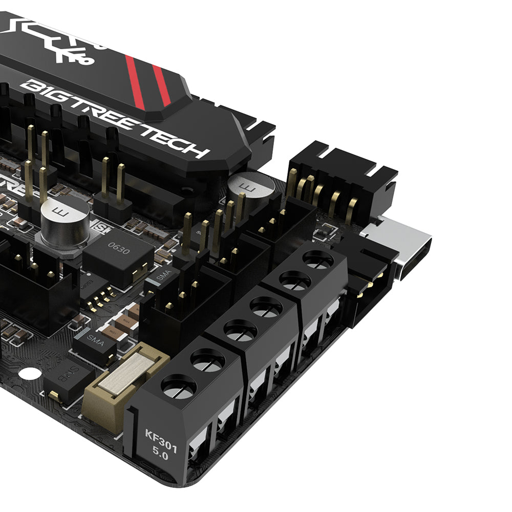
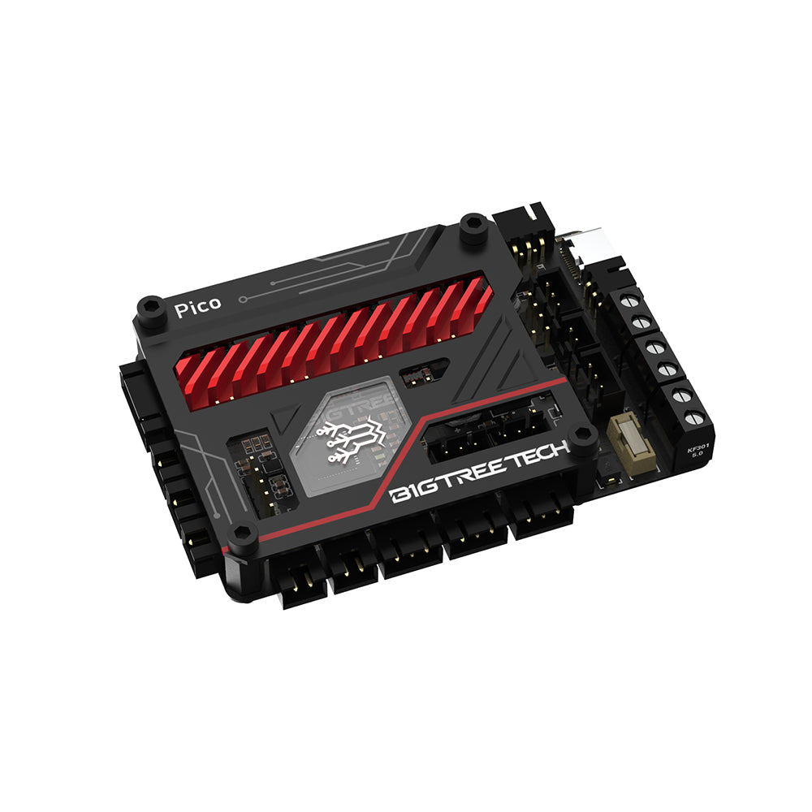
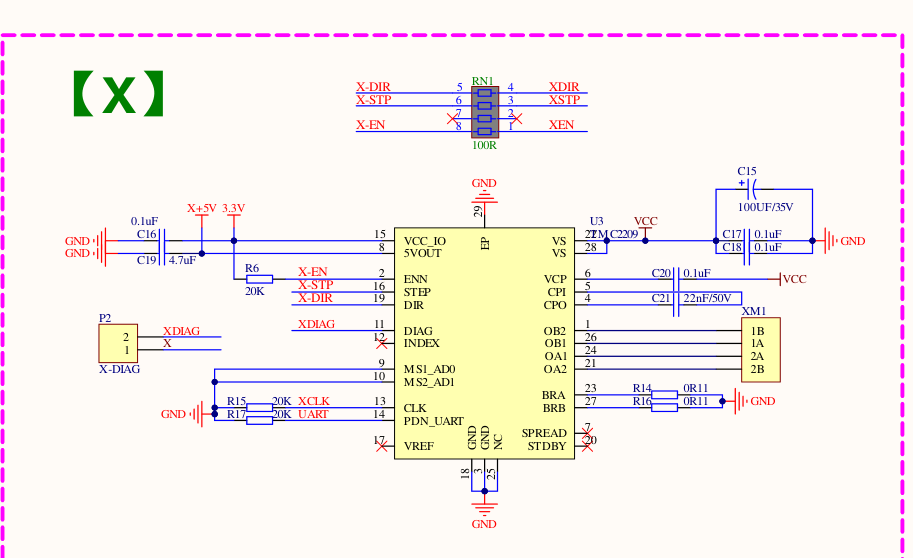
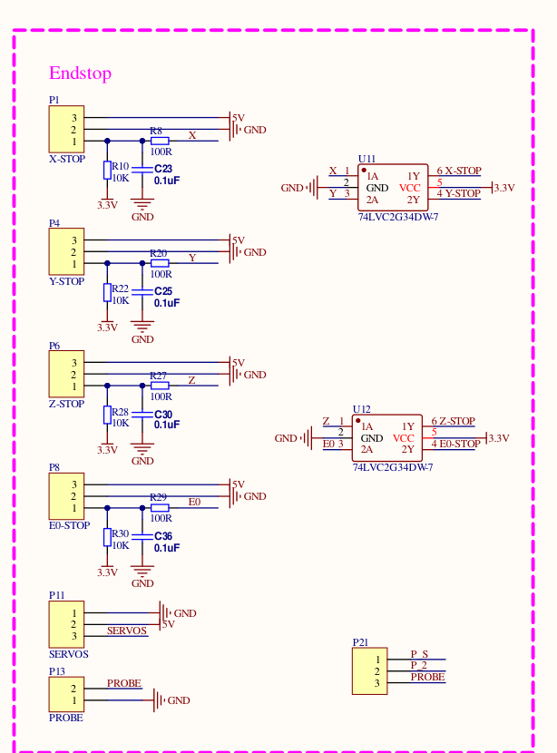
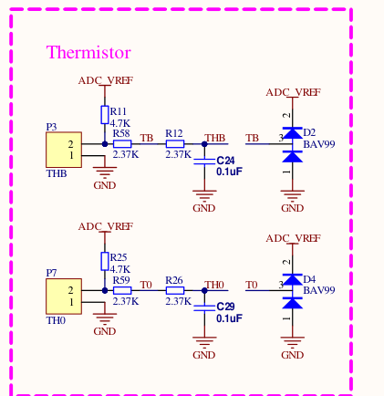
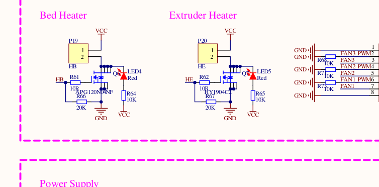
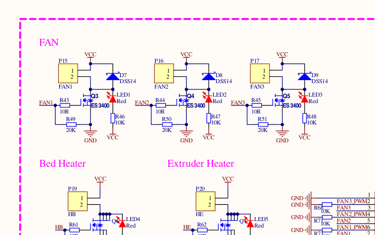
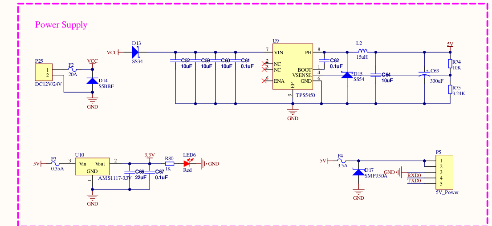

The Voron V0 has zero room for a wiring mess. This board is the purpose-built fix:
palm-sized, four silent drivers already soldered on, and a one-cable Pi hookup — power and
data down the same five wires — engineered for the V0's cramped skirt from day one.
◆Purpose-built for the Voron V0 skirt◆Silent drivers — tuned in firmware, no pots◆Powers your Pi over one cable
✔ VERIFICATION STATUS — every pin verified against BTT's official schematic,
pin diagram, and shipped Klipper config (2026-07-11). Physical bench run: pending — and we say so,
because that's the difference between us and a guess.

The real board — official BigTreeTech product photography, used with credit.
What runs where — the picture nobody draws for you
Two honest ways to run this board — the difference is WHERE the brain lives.
Neither is wrong; the page covers both to the same depth.
LANE A · THE KLIPPER WAY — brain on the Pi (the V0 crowd's favorite)
YOUR PC
Slicer
OrcaSlicer / Cura turns models into G-code. Uploads over Wi-Fi.
Wi-Fi
THE BRAIN · RASPBERRY PI
Klipper
Does the motion math. The control screen is YOUR pick:
MainsailFluiddOctoPrintKlipperScreen
one 5-wire cable (P5)
THE REFLEXES · THIS BOARD
SKR Pico
Executes every step pulse with microsecond timing. Motors, heaters, fans, sensors.
LANE B · THE MARLIN WAY — the whole brain on the board, classic and self-contained
YOUR PC
Slicer
Same slicers, same G-code — sent over Wi-Fi. (No SD slot on this board: a host feeds it.)
Wi-Fi
THE REMOTE CONTROL · RASPBERRY PI
OctoPrint
Marlin's classic partner — uploads, camera, the plugin universe. The brain stays on the board.
works with Marlin nativelyworks with Klipper too
USB — or the same 5-wire P5 link
THE WHOLE BRAIN · THIS BOARD
SKR Pico + Marlin
Thinks AND executes onboard — motion math, temps, safety, all on the RP2040.
STEP 2 · KNOW YOUR BOARD — THE REAL ONE, FLAT
Every label is a doorway — the whole screen works for you
Center: the real board, flat — BigTreeTech's own official top view, straight from their
manual. Sides: real circuits from the schematic, macro details, and live demos as this page grows.
FROM THE SCHEMATIC · ENDSTOP INPUT
Real circuit, real answer
Why a bare switch just works — and why 5 V sensors are welcome too. Every snippet drawn from the actual schematic.

UP CLOSE · REAL HARDWARE
Know it when you hold it
Screw terminals for power and heaters, USB-C on the corner. Macro shots for every port below.
The real board, flat — BigTreeTech's own official top view (from their manual, credited). Exactly what's in your hands.
Click any label
The full connector card appears here — plain English first, engineering depth underneath. Both lanes, never mixed.

▶
LIVE DEMO · LANDING SOON
See the wiring move
Wire the X motor, tap "jog +10" — watch a photoreal printer respond on screen. The relay-trainer engine, pointed at 3D printing. Built from real CAD, not cartoons.
WHY THIS BOARD
The V0's sweetheart
Tiny footprint, silent drivers, one-cable Pi pairing. If you're building a V0, this page IS your wiring chapter.
TESTED PROMISE
What we verified — and how
Schematic ✓ pin map ✓ shipped firmware config ✓ — three official sources, zero disagreements.
Bench run on real hardware: pending, and the page says so until it's done.
STEP 3 · WIRE IT — THE ENGINEERING CHAPTER
The real schematics — BigTreeTech's own engineering sheet
POLARITY LEGEND — every card below marks it:+= supply side (red wire) · −/GND= return (black wire) ·
NON-POLARIZED= either wire, either terminal, stated outright.
Pin orders read off BTT's flat view (motors on the top edge) — if your board is mounted rotated,
trust the printed silkscreen, never the position.
No redrawn approximations. These are print-resolution sections of the manufacturer's
actual schematic — the same drawing their engineers built the board from — with our plain-English
reading guide and the multimeter checks that keep hardware alive. Full sheet downloadable below.
Stepper driver — the complete X circuit
XM1 · TMC2209 · gpio11/10/12

Read it like this: step/dir/enable arrive from the RP2040 (left), the TMC2209
does the silent-drive magic, and coil pairs leave on XM1 pins 1A/2A and 1B/2B (right). The P2 header is
the X-DIAG jumper for sensorless homing. Y, Z and E0 are this exact circuit with different UART addresses.
⚡ MULTIMETER — coil pairing on an unknown motor cable: a coil pair reads ~1–5 Ω across
it; across different coils = open. Verify before first power if wire colors look nonstandard.
⚠ Motor backwards? Flip it in firmware (Klipper: add/remove ! on dir_pin) — don't re-crimp.
Endstops, probe & servo — the input bank
X/Y/Z-STOP · E0-STOP · gpio4/3/25/16

Read it like this: each 3-pin port (P1/P4/P6/P8) carries 5 V, GND and a signal
that's pulled to 3.3 V through 10 kΩ, RC-filtered, then buffered through the 74LVC gates before the
RP2040 ever sees it. That's why a bare switch just works — and why powered 5 V sensors are welcome.
SERVOS and PROBE (bottom) feed the BLTouch port.
PIN ORDER left→right: SIGNAL · GND · 5V (silkscreen IO4/3/25/16 · GND · 5V).
A plain switch goes on SIGNAL + GND — either way round, no polarity. The 5 V pin is ONLY for powered sensors.
⚠ A switch wired across GND + 5V dead-shorts the fused 5 V rail on every trigger — brownouts, reboots, and it kills a Pi powered from this board.
⚡ MULTIMETER — continuity beep across a switch: silent open, beep pressed = wired right.
Then QUERY_ENDSTOPS before the first home. Always.
Thermistors — the sensing circuit
TH0 gpio27 · THB gpio26

Read it like this: your 100 k NTC pulls against the 4.7 kΩ reference (R11/R25),
the 2.37 k + 0.1 µF pair cleans the signal, and BAV99 diodes clamp anything nasty before the ADC pin.
NON-POLARIZED — either wire, either pin. BTT's config ships expecting the EPCOS 100K — swapping sensors is one config line.
⚡ MULTIMETER — a healthy 100 k thermistor reads ≈100 kΩ at 25 °C and drops as it warms.
0 Ω or open = replace it before it lies to your heater.
Heaters — bed & hotend muscle
HB gpio21 · HE gpio23

Read it like this: the + screw sits at PSU voltage whenever the printer is on;
the low-side MOSFETs (APG120N04NF for the bed's amps, HY1904C2 for the hotend) switch the return leg on
firmware PWM. LED4/LED5 glow when each output fires — your first free diagnostic.
NON-POLARIZED — a heater cartridge has no + or −: either wire, either screw.
⚠ But because switching is LOW-SIDE, both screws sit at PSU voltage whenever the printer is on — even with the heater "off".
Power down before touching heater wiring.
⚡ MULTIMETER — cold sanity check: a 24 V/40 W cartridge ≈14 Ω; a 24 V/60 W bed pad ≈10 Ω
(V²÷P). Wildly off or open = don't power it. And re-torque bed screws after the first heat cycle.
Fans — three outputs, one circuit
FAN1/2/3 · gpio17/18/20

Read it like this: three identical low-side switches (ES3400) with DSS14 flyback
diodes and indicator LEDs. In BTT's shipped config: FAN1 = part fan (M106), FAN2 = hotend fan (auto at
50 °C), FAN3 = board fan (tied to bed) — and FAN3's gpio20 is shared with the Laser header: one or the other.
PIN ORDER top→bottom: 12/24V (+, red) · IO17/18/20 (−, black, switched).
POLARIZED: a reversed fan simply never spins — if it won't start, flip the plug before blaming the board.
⚡ CHECK FIRST — fan ports pass YOUR PSU voltage. On a 24 V machine, a 12 V fan cooks in
seconds. The sticker on the fan hub tells the truth. Red to +.
Power — from PSU to Pi, the whole story
P25 in · TPS5450 · P5 out

Read it like this: 12/24 V enters through the 20 A fuse (F2) past the S5BBF
reverse-polarity diode. The TPS5450 buck makes the 5 V rail; F4 (3.5 A) guards the P5 header that powers
your Pi — the RXD0/TXD0 lines beside it are the UART conversation. AMS1117 makes 3.3 V for the brain.
WHICH SCREW IS + : the one printed 12/24V (bottom pole in the flat view);
GND is the top pole. Anchor to the silkscreen, not the position. ⚠ Reversed power is a crowbar event —
the protection diode conducts hard through the 20 A fuse. Best case a blown fuse; don't find out.
⚡ HONEST LIMIT — 3.5 A on P5 runs a Pi Zero 2 W / 3A+ happily. A Pi 4 under load can
exceed it: own supply, connect GND+TX+RX only.
REAL INSTALLS · STRAIGHT FROM THE FACTORY MANUAL
Wire it exactly like this
Real board, real components, real wires — BigTreeTech's own installation photography,
each cross-checked against the schematic above and our verified pin table.
PIN ORDER top→bottom: 5V · 5V · GND · RXD(IO1) · TXD(IO0).
Crossed TX/RX just means no comms — swap and retry, harmless. But never land 5 V on the IO pins: RP2040 pins are not 5 V-tolerant.
⚠ NAMING TRAP: BTT's own pinout diagram captions BOTH this header AND the real laser output "Laser" — the actual laser port
is the 3-pin by the HE terminal. Never wire a laser module here.
PIN ORDER top→bottom: PROBE · GND · SERVO(IO29) · 5V · GND —
BLTouch: white→PROBE, black→GND beside it; orange→SERVO, red→5V, brown→bottom GND.
⚠ The PROBE pin is UNBUFFERED (straight to the RP2040, unlike the endstops) — 5 V on it risks the chip. Match the colors, then meter it.
PIN ORDER left→right: GND · DATA(IO24) · 5V — data rides the CENTER pin.
⚠ POLARIZED, and it bites: flipping the plug end-for-end keeps data centered but swaps 5 V and GND —
reverse polarity destroys WS2812/Neopixel strips. Map the STRIP's wire order to the silkscreen; never assume they match.
STEP 4 · FLASH IT — YOUR WAY
Fifteen minutes from box to talking board
The recommended Klipper path, exactly as we'd do it. Marlin and other roads below —
every one verified, none assumed.
Get the firmwareDownload klipper-USB.uf2 (or UART0 if using the 5-wire link) right below. Pre-built by BTT for this exact board.
BOOTSEL modeHold the BOOT button, plug USB-C into your Pi/PC, release. The Pico appears as a USB drive named RPI-RP2.
Drag. Drop. Done.Copy the .uf2 onto the drive — it reboots itself as a Klipper board. No compiler, no terminal, no drama.
Point the Pi at itInstall Mainsail OS on the Pi, drop in BTT's printer.cfg (below), set the serial line (guide covers UART vs USB).
First-boot checksTemps read room-temp sane → QUERY_ENDSTOPS → jog each axis 10 mm → first home with a finger on the power switch.
The actual circuit behind that jumper — cut straight
from BTT's engineering schematic. Click to inspect.
The files — read the label before you flash
Every file below announces exactly what it is and which hardware it belongs to.
The two firmware builds are mutually exclusive — that's the #1 wrong-download on this board.
⚡ PICK ONE — how does your Pico talk to the Pi?
USB-C cable → klipper-USB.uf2 · 5-wire P5 lead → klipper-UART0.uf2.
Different builds, not interchangeable: a UART-flashed board will NOT show up on USB, and a
USB-flashed board is deaf on the 5-wire link. Flash the one that matches your cable.
FIRMWARE · PRE-BUILT BY BTT
Klipper firmware (USB)
✔ FOR: SKR Pico V1.0 · USB-C cable to the Pi
✕ NOT for the 5-wire P5/UART link — that's the other file
BTT's official pre-built klipper.uf2 for USB-C connection to the Pi. The simplest path — one cable does data.
⚠ EDIT BEFORE USE — ships expecting the UART link (serial: /dev/ttyAMA0).
USB users: swap in your /dev/serial/by-id line. Pi model matters — the picker below gives your exact line.
BTT's shipped Klipper config for this board — every pin pre-mapped. Ender-3-shaped defaults; V0 users swap in the Voron config (guide below).
The Marlin lane + config variants — same board, no favorites
Marlin isn't in a stable release for this board yet — so we compiled it ourselves from
Marlin's own development branch and published the exact configuration we used. Honest status on every label.
FIRMWARE · COMPILED BY HONEYBADGER
Marlin firmware — USB & UART builds
✔ FOR: SKR Pico V1.0 · Marlin lane — same PICK-ONE rule as Klipper:
USB-C cable → USB build · 5-wire P5 lead → UART0 build
⚠ HONEST STATUS: built from Marlin's dev branch (bugfix-2.1.x, commit f44cb94) —
compile-verified 2026-07-10, bench-run pending. Generic geometry: set YOUR machine's sizes and test
endstops (M119) before first motion.
Marlin's own SKR_Pico target: BOARD_BTT_SKR_PICO, four TMC2209s in UART mode (addresses identical
to BTT's own map). Flash exactly like Klipper: hold BOOT, plug in, drop the .uf2.
dev-branch builds · exact config in the next card · source ↗
CONFIG · THE EXACT BUILD RECIPE
Marlin config bundle
⚠ EDIT BEFORE USE — this is the exact Configuration.h behind the build above:
board/drivers/serial are set; bed size, endstop polarity and geometry are Marlin defaults awaiting YOUR machine.
Configuration.h + Configuration_adv.h + a build README (branch, commit, every line we changed).
Rebuild it yourself or tune from a known-good base.
✔ These live on the Pi, not the board — install there, nothing downloads here
Mainsail / Fluidd / KlipperScreen: Klipper-only (they speak Moonraker).
OctoPrint: the engine-agnostic one — Marlin's native partner over USB, and it runs with
Klipper too via Klipper's virtual serial port.
The UART lives in a different place on different Pis, the config files moved in
Raspberry Pi OS Bookworm, and BTT's manual recipe is Pi-3-era. Wrong recipe = a link that silently
does nothing. Every line below is verified against the official Raspberry Pi documentation and
BTT's own repos — pick your board, copy, done.
STEP 0 · FIRST TIME? BUILD THE SD CARD BEFORE ANY OF THIS.
Grab the official Raspberry Pi
Imager ↗ — it downloads AND flashes the OS in one tool.
KLIPPER LANEinside the Imager choose Other specific-purpose OS → 3D printing →
MainsailOS (or get it direct: MainsailOS ↗).
MARLIN LANEsame menu, pick OctoPi (direct:
octoprint.org/download ↗).
BTT CB1not a Raspberry Pi — use BTT's own image from the
CB1 repo ↗.
Then come back here, pick your board below, and make the UART link work.
✔ P5 POWER: OK — the Pico's fused 5 V rail (3.5 A) comfortably feeds these headless
(~0.4–0.5 A typical). Keep USB peripherals off the Pi, and NEVER connect the Pi's own PSU at the same time.
PI 3B / 3B+ / ZERO 2 W — THE VERIFIED RECIPE
# /boot/firmware/config.txt (older images: /boot/config.txt)
dtoverlay=disable-bt # headless printer (recommended)
# -- OR, to keep Bluetooth: --
# dtoverlay=miniuart-bt
# core_freq=250 # REQUIRED with miniuart-bt
# /boot/firmware/cmdline.txt — DELETE this token:
# console=serial0,115200
# after first boot, if you chose disable-bt:
# sudo systemctl disable hciuart
# printer.cfg
[mcu]
serial: /dev/ttyAMA0
restart_method: command
Why any of this? On these models Bluetooth owns the good UART.
One overlay frees it for the printer link.
Bookworm moved the files. Editing /boot/config.txt on current
Raspberry Pi OS does nothing — the live file is under /boot/firmware/.
BTT's "pi3-miniuart-bt" still works but is officially deprecated —
the names above are current.
Prove the power is clean: vcgencmd get_throttled → 0x0.
◐ P5 POWER: CAUTION — a lean headless Pi 4 runs fine (~1.25 A stress vs the 3.5 A fuse),
but P5 can't honor the Pi 4's full 3 A envelope: no cameras, screens or USB drives. Pi 400: use its own USB-C supply, period.
PI 4 / 400 — THE VERIFIED RECIPE
# /boot/firmware/config.txt (older images: /boot/config.txt)
dtoverlay=disable-bt # headless printer (recommended)
# -- OR, to keep Bluetooth: --
# dtoverlay=miniuart-bt
# core_freq=250 # REQUIRED with miniuart-bt
# /boot/firmware/cmdline.txt — DELETE this token:
# console=serial0,115200
# after first boot, if you chose disable-bt:
# sudo systemctl disable hciuart
# printer.cfg
[mcu]
serial: /dev/ttyAMA0
restart_method: command
Same trap, same fix as the Pi 3 family: Bluetooth owns the PL011 until
the overlay frees it. The Pi 4 has six UARTs — the one on the header pins is what we're claiming.
BTT's manual is Pi-3-era three ways: deprecated overlay name, pre-Bookworm
file paths, and the missing core_freq line. The recipe above is current.
Prove the power is clean: vcgencmd get_throttled → 0x0.
✕ P5 POWER: NO — a Pi 5 demands a 5 A / 27 W supply; the Pico's fused rail tops out
at 3.5 A / 17.5 W shared. Power the Pi 5 from ITS OWN USB-C supply and run only TX · RX · GND to P5.
PI 5 / 500 — THE VERIFIED RECIPE (DIFFERENT FROM EVERY OTHER PI)
# /boot/firmware/config.txt — add BOTH lines:
enable_uart=1
dtparam=uart0=on # (documented alternative: dtoverlay=uart0-pi5)
# /boot/firmware/cmdline.txt — DELETE this token:
# console=serial0,115200
# printer.cfg
[mcu]
serial: /dev/ttyAMA0 # NEVER /dev/serial0 on a Pi 5 — that
restart_method: command # shortcut points at the DEBUG connector!
The /dev/serial0 trap: on Pi 5 that shortcut points at the tiny 3-pin
DEBUG port, not the 40-pin header. Guides that say "use serial0" silently aim Klipper at the
wrong socket. Hardcode /dev/ttyAMA0.
The Pi-3/4 overlays do NOTHING here. Bluetooth has its own dedicated UART
on the Pi 5 — copying BTT's old recipe adds a no-op and misses the uart0 enable that actually matters.
Wiring is data-only: GND + TX + RX. Do not connect P5's 5 V pins to a Pi 5.
✔ P5 POWER: OK — CB1/CB2 max input is 5 V / 2 A vs the 3.5 A fused rail: 1.5 A headroom.
Applies on a CM4 carrier (PI4B Adapter); socketed on a Manta board none of this applies — the Manta wires it internally.
BTT CB1 / CB2 — THE VERIFIED RECIPE (NOT A RASPBERRY PI!)
# BOOT partition (FAT32 — editable from Windows).
# V3.0.0 images: armbianEnv.txt (V2.3.x images: BoardEnv.txt)
# change this line:
# console=display
# to:
console=serial # yes — 'serial' FREES the UART on BTT images
# (stock-Armbian docs describe the opposite; BTT inverts it)
# printer.cfg — CB1:
[mcu]
serial: /dev/ttyS0 # header pins 8 (TX) / 10 (RX) on the PI4B Adapter
restart_method: command
# printer.cfg — CB2 instead:
# serial: /dev/ttyS2
No config.txt, no cmdline.txt, no dtoverlay. Those are Raspberry Pi files —
they don't exist here. One line in armbianEnv.txt is the whole job.
File-name drift: older V2.3.x images call it BoardEnv.txt. Check which one
your BOOT partition actually has.
CB2 only: never add overlays=disable_uart2 — that removes the very UART
you're trying to use.
Supported in Marlin's development branch — and it covers BOTH host links, just like Klipper:
USB (SERIAL_PORT -1) or the 5-wire P5/UART0 link (SERIAL_PORT 0). Not in a stable release yet —
our compiled dev-branch builds are in Downloads above.
◐ Dev-branch only (verified in source)
CHECKED SO YOU DON'T HAVE TO
RepRapFirmware
Not available for this board — RRF's ports cover STM32/LPC mainboards; RP2040 isn't among them. Verified against the maintainers' own list so you don't burn an evening finding out.
✕ Not available (verified)
STEP 5 · MAX IT OUT — THE HONEST CEILING & EVERY PATH PAST IT
"What if I want 8 motors? 16?" — here's exactly where this board ends, and how to go further
Most guides pretend a board has no limits. Engineers plan around real ones. Below:
the Pico completely maxed out, the printer-matchmaking math, and the verified expansion paths when your
ambitions outgrow four drivers.
The fully-loaded SKR Pico — every port populated at once
Motion
X + Y + Z×2 (parallel) + E
4 drivers · 5 motors
Heat
Hotend + bed, both thermistors
2 outputs · 2 ADC
Air
Part fan + hotend fan + board fan
3 PWM outputs
Sensing
X/Y/Z endstops + filament runout
4 inputs (5 V capable)
Leveling
BLTouch or inductive probe
probe + servo
Light
Neopixel chain (onboard LED first)
gpio24 · 5 V fused
Brain link
Raspberry Pi — powered + connected
P5 · 5 V @ 3.5 A
Alt. duty
Laser PWM (engraver conversions)
shares gpio20 — FAN3 off
The hard ceiling — no 5th driver socket exists; Z's two sockets are one
driver twinned. Past this point you ADD A BOARD, not wishes.
4 drivers. Period.
Voron matchmaking — motor math, not marketing
PRINTER
MOTORS NEEDED
ON ONE PICO?
Voron V0 / V0.2
A + B + Z + E = 4
✔ PERFECT — the board's home turf
Voron Switchwire
A + B (CoreXZ) + Y + E = 4
◐ Fits electrically (4 drivers) — check your endstop plan
Independent Z leveling
(Trident/2.4) can't use the Pico's twinned Z sockets — those move as ONE. Motor counts from the
official Voron specs; when a printer outgrows this board, we'll tell you which board it grows into.
Three verified roads past four drivers
+4MORE DRIVERS
PATH 1 · KLIPPER MULTI-MCU
Add a second board — same printer
Klipper natively runs multiple controller boards in ONE printer config — a second Pico over USB
gives four more drivers, more heaters, more fans, all coordinated by the same Pi. Two lines of config
per extra MCU. This is Klipper's superpower and most people never learn it.
2nd SKR PicoUSB cable[mcu pico2] in config
+1AT THE TOOLHEAD
PATH 2 · CAN / USB TOOLHEAD
Move the extruder brain to the head
An EBB toolhead board puts the extruder driver, hotend heater, fans, probe and accelerometer AT the
toolhead — your whole harness collapses to a few wires. EBB SB2209 runs USB or CAN; add BTT's U2C
adapter on the Pi if you go CAN.
EBB36 / EBB42EBB SB2209 (CAN/USB)U2C adapter
+2FOR MULTI-MATERIAL
PATH 3 · ERCF ON THE MMB
The 8+ motor dream — multi-material without touching the Pico
The Enraged Rabbit Carrot Feeder (multi-color!) brings its own controller — BTT's MMB CAN board
drives the ERCF's gear and selector motors as another Klipper MCU. Your Pico keeps its four drivers;
the filament factory runs itself.
MMB CAN V2.0ERCF kitHappy Hare config
The wire schematics — every path, drawn on the real hardware
Not "trust us, it works" — here is each expansion path with the actual boards, the actual
connectors, and the exact config lines, all read off BigTreeTech's own files and the official Klipper docs.
THE BIG ONE · "WHAT IF I HAVE 16 MOTORS?" — HERE IS EXACTLY HOW THEY WIRE UP
Four SKR Picos · one Raspberry Pi · one printer.cfg — 16 drivers, drawn cable by cable
How it actually works: Klipper's brain lives on the Raspberry Pi, and the Pi
doesn't care how many controller boards report to it — each board is just another [mcu] section
in the same config file. Board #1 keeps the stock 5-wire UART link; boards #2–#4 each take ONE ordinary
USB-C cable into the Pi's own USB-A ports — a Pi 4 has exactly four, so a four-board machine needs no
hub at all. USB carries data only here: every board still eats from the 12/24 V DC bus, which is
why the power pairs below are drawn as real wires — they are not optional.
UART data + 5 V to the Pi (TPS5450 buck, 3.5 A fuse)
C2–C4
Pico #2/#3/#4 · USB-C
Pi · USB-A portsone each
USB-A → USB-C, any data-rated cable
Klipper data ONLY — USB-Power jumpers stay OFF
P1–P4
V+V− PSU DC bus
each Pico · POWER12/24V · GND screw terminals
2-cond, 18 AWG min per board
Board + motors + heaters power — every board, no exceptions
PRINTER.CFG — FOUR BOARDS, ONE FILE
# ---- Board 1: the stock UART link — Klipper's timing master ----
[mcu]
serial: /dev/ttyAMA0
restart_method: command
# ---- Boards 2-4: one USB cable each; find IDs with ----
# ls /dev/serial/by-id/*
# (each RP2040's serial number is inside its ID string)
[mcu picoB]
serial: /dev/serial/by-id/usb-Klipper_rp2040_E66138A512345678-if00
[mcu picoC]
serial: /dev/serial/by-id/usb-Klipper_rp2040_E66138A587654321-if00
[mcu picoD]
serial: /dev/serial/by-id/usb-Klipper_rp2040_E66138A511223344-if00
# ---- Then any pin, anywhere, gets a prefix ----
# step_pin: picoB:gpio11 (X socket on board 2)
# uart_pin: picoB:gpio9 (that board's own TMC UART bus)
# tx_pin: picoB:gpio8
#
# THE ONE LAW OF SPLITTING AXES (klipper3d.org, Multi-MCU Homing):
# every stepper of a homed axis stays on ONE board when its
# endstop/probe lives elsewhere. Split machines by FUNCTION:
# board1 = X+Y+E, board2 = all Z, board3 = tools, board4 = aux.
Who actually needs 16? Real, documented builds: a Voron 2.4 is 7 motors
(2 CoreXY + 4 Z + extruder); add ERCF multi-material = 9; a six-tool StealthChanger Voron = 12
(a per-tool extruder each); bolt AWD and ERCF onto that and you're brushing 16. Verified against
each project's own configs.
One PSU is fine — size it honestly. Four boards can share one properly-rated
12/24 V supply, each on its OWN wire pair to the terminals. Add every heater + motor's draw;
drivers above 0.8 A want a cooling fan (BTT's own manual caution).
The Pi's USB power budget survives because the boards are self-powered:
with 12/24 V connected and the USB-Power jumper OFF, the USB lead carries data, not the board.
Past ~2 boards, also price an Octopus. 8 drivers on one board beats 2 Picos
on wiring, mounting and money — the honest engineering call. (Octopus hub is next in line.)
PATH 1 · TWO PICOS, ONE PRINTER — THE FULL PICTURE
8 drivers · 4 heat outputs · 6 fans — for the price of a second Pico
How it actually works: Klipper treats the second board as four more sockets on the
same printer — not a second printer. The Pi keeps ONE printer.cfg; every pin on board #2 is addressed as
pico2:gpioN. The USB cable is a data lead: board #2 still powers itself (and its motors and heaters)
from its own 12/24 V pair on the POWER terminals.
#
FROM
TO
CABLE
CARRIES
C1
Pico #1 · P5 header5-pin JST
Pi · GPIO pins 2/4/6/8/105V·5V·GND·TXD·RXD
BTT's included 5-wire lead
UART data + 5 V to the Pi
C2
Pico #2 · USB-C
Pi · any USB-A port
USB-A → USB-C data cable
Klipper data only
P1, P2
V+V− PSU
each Pico · POWER12/24V · GND
2-cond, 18 AWG min
All board/motor/heater power
PRINTER.CFG — PINS FROM BTT'S OWN SHIPPED CONFIG
# ---- Pico #1 — the stock UART link (BTT README) ----
[mcu]
serial: /dev/ttyAMA0
restart_method: command
# ---- Pico #2 — plain USB-C to the Pi ----
# Flash klipper-USB.uf2, then find its ID: ls /dev/serial/by-id/*
[mcu pico2]
serial: /dev/serial/by-id/usb-Klipper_rp2040_E66094A027831922-if00
# ---- Any pin on board 2: just add the prefix ----
[manual_stepper aux_motor] # X socket on the second Pico
step_pin: pico2:gpio11
dir_pin: !pico2:gpio10
enable_pin: !pico2:gpio12
microsteps: 16
rotation_distance: 8
[tmc2209 manual_stepper aux_motor] # driver UART needs the prefix too
uart_pin: pico2:gpio9
tx_pin: pico2:gpio8
uart_address: 0 # X=0 · Y=2 · Z=1 · E=3
run_current: 0.580
Homing across boards overshoots. Klipper caps the inter-board delay at 25 ms —
at 10 mm/s that is up to 0.25 mm past the switch. Home slow; the frame must tolerate it.
Never split a homed axis. If the endstop lives on another board, stepper_z and
stepper_z1 must stay on the SAME board — Klipper's own rule, not ours.
USB-Power jumper stays OFF whenever 12/24 V is connected. BTT's exact words:
"it is best to remove the jumper."
/dev/serial/by-id/ only. ttyACM0 can shuffle on every replug; the by-id path
survives because the RP2040's serial number is in it.
PATH 2 · CAN TOOLHEAD — BTT'S OWN TOPOLOGY DIAGRAM
Four wires to the toolhead. That's the whole harness.
How it actually works: CAN is a two-wire party line, not a point-to-point cable —
the U2C turns one Pi USB port into that line (can0), and every CAN board on the machine hangs off the
same twisted pair, each answering to its own canbus_uuid. The EBB's whole umbilical is four
conductors: two carry 12/24 V power, two carry the CAN pair. The bus needs exactly two 120 Ω
terminators — one at each END — and nothing in the middle.
#
FROM
TO
CABLE
CARRIES
C1
Pi · USB-A
U2C · Type-C (CAN_IN)
USB-A → USB-C
The whole can0 interface
P1
PSU · V+ / V−
U2C · screw terminal VIN / GND
2-cond 18 AWG
12/24 V onto the U2C's power rail
C2
U2C · 4-pin outVIN+GND−CAN-H/L = data pair
EBB · VIN·GND·CANH·CANLsilkscreen order!
4-cond toolhead umbilical, CAN pair twisted
24 V power + CAN data to the head
T
120R jumper: U2C end
120R jumper: EBB end
—
Termination. Prove it: ~60 Ω across CAN-H/L, power off
PI + PRINTER.CFG — PER THE OFFICIAL MANUALS
# ---- On the Pi: /etc/network/interfaces.d/can0 ----
allow-hotplug can0
iface can0 can static
bitrate 1000000 # must match EVERY node's firmware
up ip link set $IFACE txqueuelen 128
# ---- Find the toolhead's ID ----
# ~/klippy-env/bin/python ~/klipper/scripts/canbus_query.py can0
# ---- printer.cfg ----
[mcu EBBCan]
canbus_uuid: 0e0d81e4210c # yours, from the query above
[extruder] # pins: BTT's sample-bigtreetech-ebb-canbus cfg
step_pin: EBBCan: PD0
dir_pin: !EBBCan: PD1
enable_pin: !EBBCan: PD2
heater_pin: EBBCan: PA2 # V1.2 boards: PB13
[tmc2209 extruder]
uart_pin: EBBCan: PA15
run_current: 0.650
Exactly TWO 120R terminators on the whole bus, one per end — then prove it:
multimeter across CAN-H/CAN-L, power off, should read ~60 Ω.
Bitrate is baked into every node's firmware. 1M everywhere (Klipper's current
recommendation) or the bus silently dies. BTT's older manual says 500K — pick ONE, rebuild all.
EBB V1.1 DFU trap: the bootloader drives the hotend pin HIGH while flashing —
disconnect hotend main power before entering DFU. (V1.2 moved the pin and fixed it.)
The U2C's USB-A ports are NOT real USB. They carry raw CAN signals for
mainboards only — toolheads wire to the screw-terminal / 4-pin outputs instead.
PATH 3 · ERCF ON THE MMB — THE 8-MOTOR PRINTER, FOR REAL
Multi-material brings its own brain: 4 Pico drivers + 4 MMB sockets = 8
How it actually works: the MMB is just another citizen on the same can0 line the
toolhead uses — one more [mcu ercf] with its own uuid. Its single XT30 connector is the whole hookup:
two pins of 12/24 V power, two pins of CAN. The ERCF's gear and selector motors plug into the MMB's own
driver sockets, so your Pico never gives up a driver to multi-material.
#
FROM
TO
CABLE
CARRIES
C1
can0 busU2C out or EBB daisy-chain
MMB · XT30VIN+GND−CAN-H/L = data pair
4-cond, CAN pair twisted
Power + CAN in one plug
M1
ERCF gear motorNEMA14
MMB · M1 socket
4-wire stepper lead
Filament drive
M2
ERCF selector motorNEMA17
MMB · M2 socket
4-wire stepper lead
Lane selection
T
MMB mid-bus → its 120R jumper comes OFF (terminators live at the two ENDS)
V1.x and V2.0 are different boards. CAN moved (PB0/PB1 → PD0/PD1) and the
M1/M2 pins changed — the config above is V1.x; V2.0 users remap or use Happy Hare's V2 template.
Even V1.0 vs V1.1 differ by one pin: M1 enable is PA8 on V1.0, PB8 on V1.1 —
BTT's own sample calls it out in comments. Check your silkscreen.
One XT30 does it all: board power AND the CAN pair ride the same 4-pin
connector — VIN · GND · CAN-H · CAN-L.
MMB sitting mid-bus? Pull its 120R jumper — the two terminators belong at the
two ENDS of the bus, nowhere else.
Every pin above was read off BigTreeTech's own sample
configs, manuals and pinout sheets, cross-checked against klipper3d.org — sources credited on each figure.
EBB, MMB and Octopus each get their own full hub next.
THE HARDWARE DESERVES THE DRAMA
Small board. V0-sized ambitions.
BigTreeTech built the SKR Pico for one job: fit inside a Voron V0 and run it flawlessly — RP2040
brain, four whisper-quiet TMC2209 drivers, a footprint smaller than your palm. Add the optional cover
and it even dresses the part.
RP2040DUAL-CORE MCU
4× TMC2209UART · SILENT
85 × 56MM PCB (BTT DIM. DRAWING)
12–24 VSINGLE RAIL · 20 A FUSED
🎬 THE OFFICIAL FILMS — STRAIGHT FROM BIGTREETECH
See the board move — their cameras, our wiring
BigTreeTech's own two films for this exact board, embedded the same privacy-friendly way their
support hub embeds them. Watch the product run, then watch their install — then scroll back up to
our schematics and do it with the pin-verified depth they didn't have room for.
Straight answer: nowhere — and that's by design. Walk the full pinout:
the SKR Pico has no screen header at all — no EXP, no TFT serial port, no display connector.
BigTreeTech cut it on purpose to hit the V0 footprint. Any guide that shows a screen wired to this
board is describing a different board.
What you actually do instead — all three are how real V0s run:
OPTION 1 · THE KLIPPER WAY
Touchscreen on the Pi
The screen belongs to the brain, not the reflexes: hang an HDMI/DSI/USB touchscreen off the
Raspberry Pi and run KlipperScreen. Full touch control — heaters, moves, prints — and the
Pico never knows it exists.
Pi touchscreen (HDMI/DSI)KlipperScreen
OPTION 2 · THE ONE IN YOUR POCKET
Your phone IS the screen
Mainsail and Fluidd are full touch interfaces already — open the printer's address on your
phone or any browser. This is how most V0 owners actually drive: zero extra hardware, zero wiring.
Mainsail / Fluiddany browser
OPTION 3 · THE MARLIN LANE
OctoPrint is the interface
Running Marlin on this board? There are no display pins to wire a classic LCD to — the host is
your control panel: OctoPrint's web UI (plus its phone apps) carries the whole job.
OctoPrint web UIplugin apps
STEP 6 · THE KNOWLEDGE BASE
Every pin. Every answer. One table you can trust.
The complete GPIO map, triple-verified (schematic · pin diagram · shipped config), plus
the questions everyone asks — answered with sources, not vibes.
FUNCTION
PORT / SILKSCREEN
RP2040 GPIO
NOTES
X motor
XM1
11 / 10 / 12
step / dir / enable · TMC addr 0
Y motor
YM1
6 / 5 / 7
TMC addr 2
Z motors ×2
ZAM1 + ZBM1
19 / 28 / 2
parallel, one driver · addr 1
Extruder
EM1
14 / 13 / 15
TMC addr 3
Driver UART
—
9 rx · 8 tx
all four drivers, one bus
X / Y / Z endstop
X/Y/Z-STOP
4 · 3 · 25
3-pin, 5 V available, buffered
Filament runout
E0-STOP
16
pause_on_runout shipped on
Hotend heater / sensor
HE · TH0
23 · 27
max 300 °C enforced
Bed heater / sensor
HB · THB
21 · 26
max 130 °C enforced
Part fan
FAN1
17
M106 / slicer
Hotend fan
FAN2
18
auto ≥ 50 °C
Board fan / Laser
FAN3 · Laser
20
shared pin — one or the other
Probe / servo
PROBE · SERVOS
22 · 29
BLTouch-ready, block in config
RGB / Neopixel
RGB
24
onboard LED first in chain
Pi UART
P5
0 tx · 1 rx
+ 5 V ×2 + GND · /dev/ttyAMA0
Does the Pico power my Raspberry Pi?
Yes — verified in the
schematic: an onboard TPS5450 buck makes 5 V from your PSU, fused at 3.5 A, on the P5 header. Perfect
for a Pi Zero 2 W or 3A+. A Pi 4 under load can want more — give it its own supply and connect GND+TX+RX only.
Can I run Marlin on this board?
In Marlin's development branch, yes —
dedicated SKR_Pico build targets exist (we checked the source). It's not in a stable Marlin release yet,
so our beginner recommendation stays Klipper. Honest Marlin guide ships with the full build.
Why won't my fans spin?
They're behaving: FAN1 waits for a command
(M106 S255 to test), FAN2 waits for the hotend to hit 50 °C, FAN3 waits for the bed. Backwards polarity
is the other classic — red to +. And remember: ports output PSU voltage.
Where's the RP2040 and the drivers? I don't see them on top.
Flip it
over — the SKR Pico is a two-sided design: silicon underneath, connectors on top. That's why it mounts on
standoffs with airflow below. Both faces are documented on this page.
Sensorless homing — can this board do it?
Yes: X/Y/Z/E0-DIAG jumper
headers connect the TMC2209 DIAG outputs. BTT's config carries a commented example for Y. Physical
switches stay our beginner default; the sensorless guide is in the full build.
What did you actually verify on this page?
Every pin against three
official BTT sources (schematic, pin diagram, shipped Klipper config) — zero disagreements found. What we
haven't done yet: a physical bench run — that's stated, dated, and coming. When we can't verify a thing,
we tell you how to check it yourself (usually: multimeter).
🦡
Engineered by a human × AI team.Every pin verified against three official sources. Every word intentional. No slop — that's the whole point.